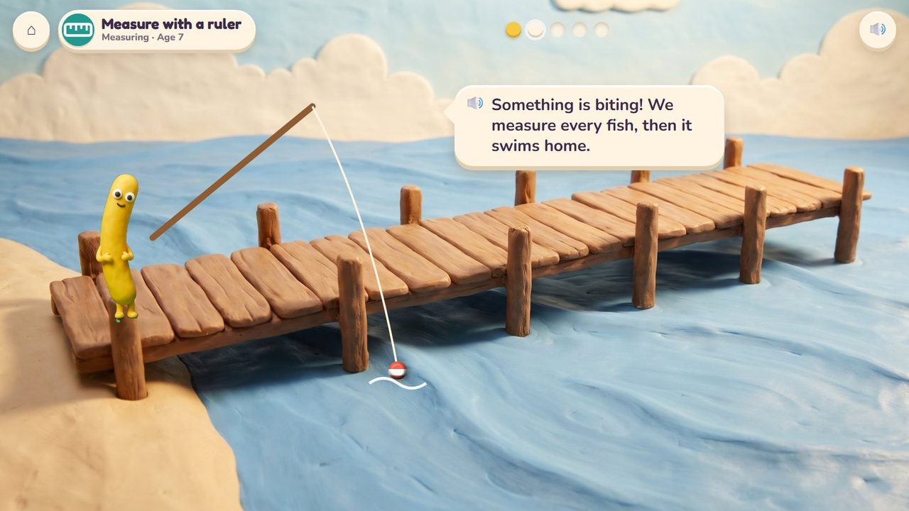
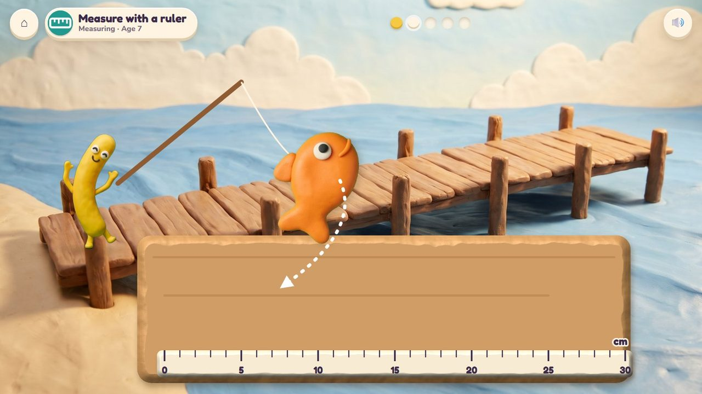
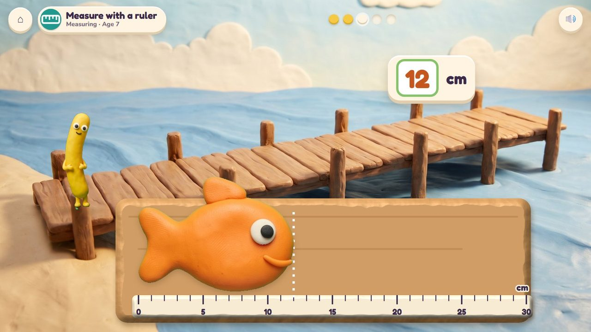
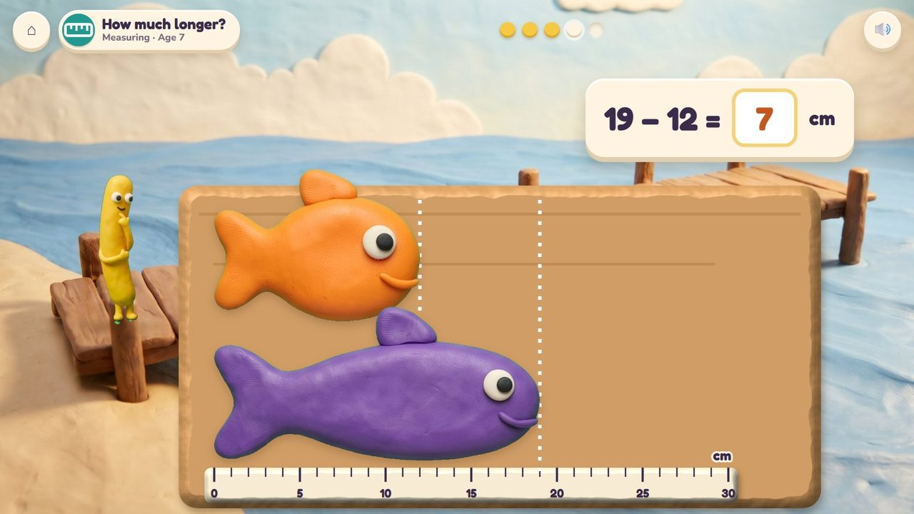
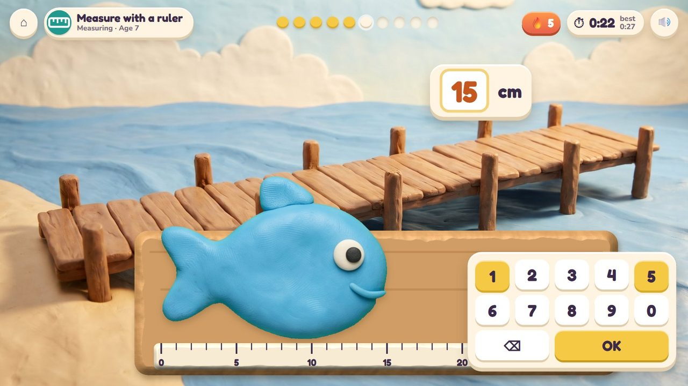
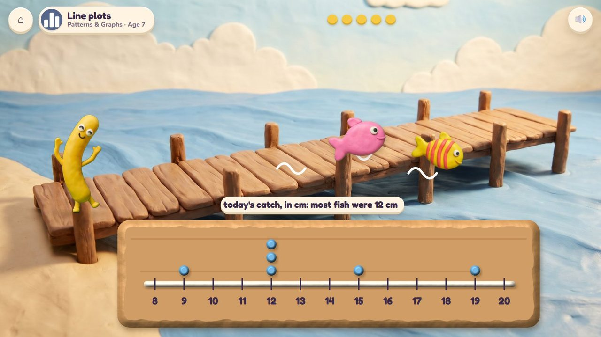
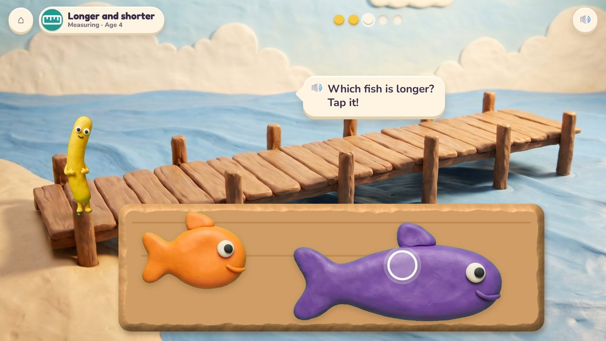
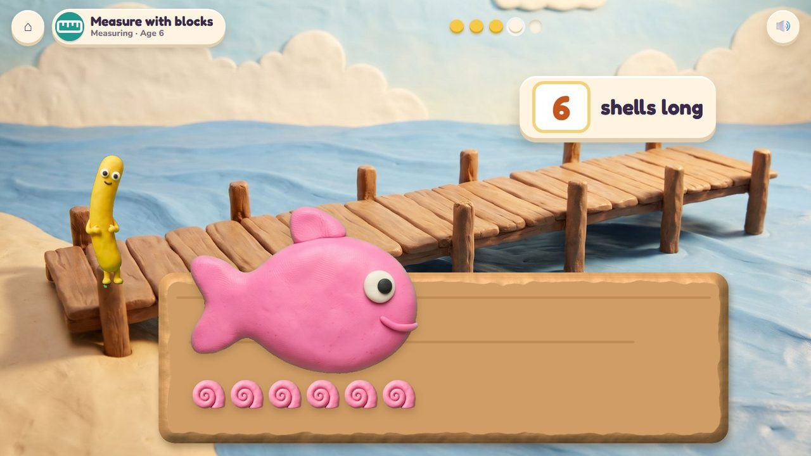
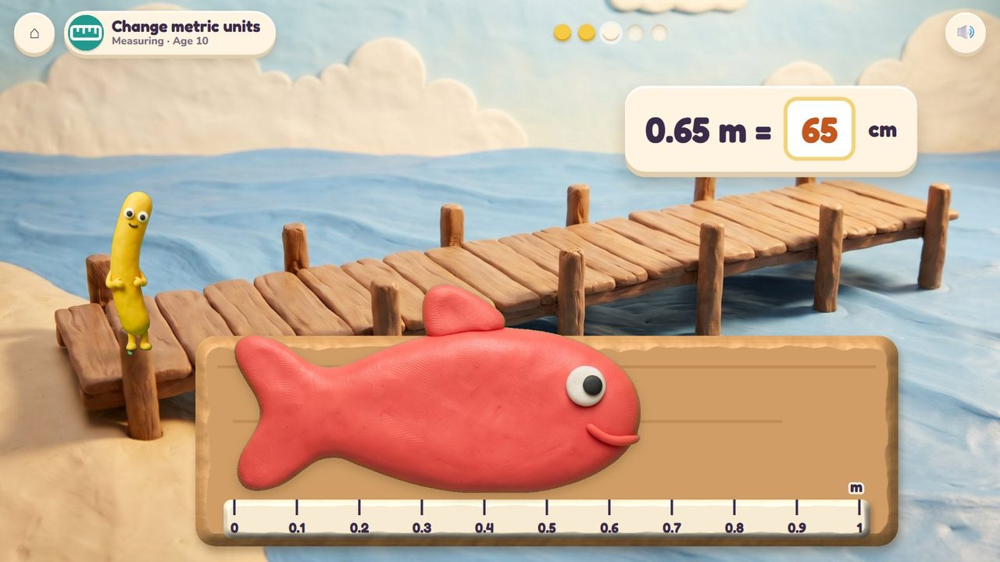

Catch a fish, measure it on the board, and let it swim home.
32 lessons (24 taught here first, the rest practised here) in 4 topics:
Adding & Taking AwayFractions & DecimalsMeasuringPatterns & Graphs

Noodle fishes from the bay's jetty. Every fish caught is laid on the measuring board, its tail at 0, and measured; then it swims home with a splash. Little ones say which fish is longer; then shells are the units; then a ruler in centimetres or inches, how much longer one fish is than another, and guessing first; later a metre stick. The day's catch makes a line plot.
Lay the fish on the board, slide the ruler, tap the longer fish.
The fish swim home, and the day's catch lies on a line plot.
A storyboard of the game in one lesson, drawn from the app's own clay pictures.
Noodle fishes from the jetty.
🔊 “Something is biting! We measure every fish, then it swims home.”

Lay it on the measuring board.

Its tail at 0, its nose at 12.

The purple fish is 19 cm, the orange 12 cm: 7 cm longer.

Read the ruler: 15 cm. Timed.

They swim home; their lengths make a line plot.
A fish lies on the ruler: type its length, how much longer it is, or its length in other units. Ten questions at 6-7, a 60-second round from 8; your time and your best on screen; only right answers count; a miss shows the answer and comes back later. No clock under 6.
The badge at the top left says the topic, the lesson and the age.

Which fish is longer? Tap it.

The pink fish is 6 shells long.

On the metre stick: 0.65 m = 65 cm.
| Age 3Pre-school | Big and small fish; long and short. |
| Age 4Pre-K | Longer and shorter; taller and shorter. |
| Age 5Kindergarten | What can we measure? Compare lengths. |
| Age 6Grade 1 | Order three fish by length; compare with a third thing; measure in shells. |
| Age 7Grade 2 | Measure with a ruler; choose the tool; estimate; how much longer; line plots. |
| Age 8Grade 3 | Half and quarter inches; line plots with halves and quarters. |
| Age 9Grade 4 | Big and small units; metres and centimetres; measuring stories. |
| Age 10Grade 5 | Changing metric and other units; decimals of a metre; line plots with fractions. |
by eye, shells as units, a centimetre ruler, inches with halves, a metre stick
whole units, then halves and quarters, then metres and centimetres
a line from the fish's nose to the ruler; after a miss the units are counted
laying fish on the board; tapping; the number pad
Age by age they are on the full list; here grouped by topic (the first activity named teaches a lesson, the others practise it).
1.OA.1Seesaw Twins · Fishing Jetty2.OA.1Treasure Shop · Fishing Jetty4.NF.3Sandcastle Twins · Fishing Jetty5.NBT.7Treasure Shop · Fishing Jetty5.NF.1Sandcastle Twins · Fishing Jetty5.NF.2Sandcastle Twins · Fishing Jettyearly yearsCritter Maker · Fishing Jettyearly yearsFishing Jettyearly yearsFishing Jettyearly yearsFishing JettyK.MD.1Fishing Jetty · Seesaw Twins · Sandcastle TwinsK.MD.2Fishing Jetty1.MD.1Fishing Jetty1.MD.1Fishing Jetty1.MD.2Fishing Jetty2.MD.1Fishing Jetty2.MD.1Fishing Jetty2.MD.2Fishing Jetty2.MD.3Fishing Jetty2.MD.4Fishing Jetty · Number Lift2.MD.5Fishing Jetty2.MD.6Number Lift · Fishing Jetty3.MD.4Fishing Jetty4.MD.1Fishing Jetty · Seesaw Twins · Sandcastle Twins4.MD.1Fishing Jetty · Volcano Pop4.MD.2Fishing Jetty · Sandcastle Twins · Seesaw Twins4.MD.4Fishing Jetty5.MD.1Fishing Jetty · Sandcastle Twins · Seesaw Twins5.MD.1Fishing Jetty · Seesaw Twins2.MD.9Fishing Jetty3.MD.4Fishing Jetty5.MD.2Fishing Jetty · Sandcastle Twins